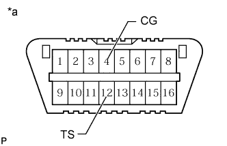

ПНЕВМАТИЧЕСКАЯ ПОДВЕСКА > РЕГИСТРАЦИЯ |
| 1. РЕГИСТРАЦИЯ ИДЕНТИФИКАЦИОННОЙ ИНФОРМАЦИИ АВТОМОБИЛЯ (ПРИ ИСПОЛЬЗОВАНИИ ПОРТАТИВНОГО ДИАГНОСТИЧЕСКОГО ПРИБОРА) |
Выключите зажигание.
Подсоедините портативный диагностический прибор к DLC3.
Включите зажигание (IG).
Включите портативный диагностический прибор.
Войдите в следующие меню: Chassis / Air suspension / Utility / Signal Check.
Проверьте информацию на мультиинформационном дисплее и убедитесь, что система находится в режиме активной диагностики.
| 2. РЕГИСТРАЦИЯ ИДЕНТИФИКАЦИОННОЙ ИНФОРМАЦИИ АВТОМОБИЛЯ (ПРИ ИСПОЛЬЗОВАНИИ ДИАГНОСТИЧЕСКОГО ЖГУТА ПРОВОДОВ SST) |
Выключите зажигание.
|  |
С помощью SST соедините контакты 12 (TS) и 4 (CG) на DLC3.
| *a | Вид спереди разъема DLC3 |
Включите зажигание (IG).
Проверьте информацию на мультиинформационном дисплее и убедитесь, что система находится в режиме активной диагностики.